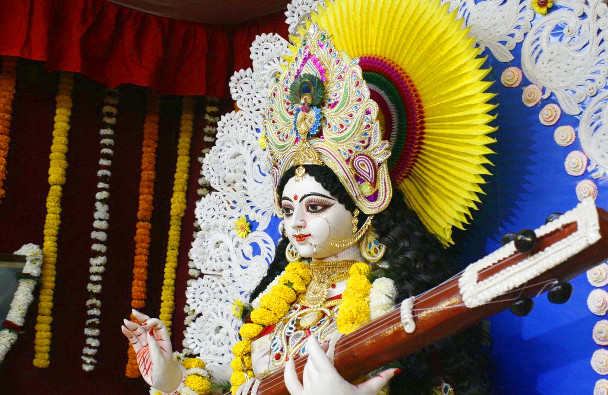

Saraswati Puja is dedicated to the goddess of music, art and knowledge called as Saraswati. This festival is celebrated in January or February in the month Magh also called as Basant Panchami or Vasant Panchami.
During Saraswati Puja Brahmins are fed, god of love Kamadeva is worshipped, special prayers for goddess Saraswati are organized by many educational institutions, Pitr Tarpan or ancestor worship is performed and children are taught to write their first words. On this day, yellow color is considered very important and therefore people dress up themselves in yellow color clothes, consume yellow sweets, and worship Saraswati in yellow clothes. The goddess is offered yellow flowers, gulal, fruits, yellow colored sweets, roli and moli.
Goddess Saraswati is represented as a graceful woman in white, a symbol of purity and peace. She is the Goddess who signifies knowledge, learning, arts and culture. She is seen as the serene Goddess wearing a crescent moon on her brow riding a swan or seated on a lotus flower. Saraswati Puja is performed to pay allegiance to the Goddess of learning.
Goddess Saraswati is the presiding deity of the spoken word. She is considered to be Lord Brahma's ‘maanasa putrika' though later events led to their marriage and they began to be worshipped as the primordial couple.
Mounting on her divine vehicle Swan, she plays on Kachchapi, her veena andis worshipped as the presiding deity of all knowledge.
Main page